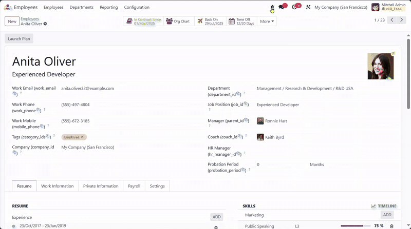
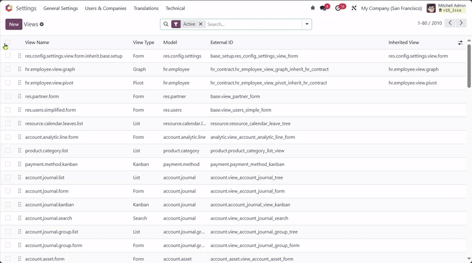

Redesigned Computed Arch

Redesigned Computed Arch and XPath Tool for any view types

Available for Hire!
Looking for a skilled and reliable Odoo Developer to bring your business ideas to life? or to fix
things? or to analyze unwanted results? or to do whatever in odoo
Let's build something great together! I specialize in custom module development, ERP implementation,
and performance tuning tailored to your needs.
Hire Me
wa.me/923482852693
/rajeelzahid
Overview
XPath Tools is a utility module for Odoo developers that simplifies and improves working with view architectures of any type of views including QWeb templates.
It introduces an interactive interface to inspect the full computed arch of a view (including inherited elements), generate precise XPath expressions,
and reverse XPath expressions back to XML fragments. This makes XML-based view customization much easier, especially for junior developers.
Key Features
- Redesigned UI for Computed Arch to input XML and get the exact XPath expression.
- Reverse tool: input XPath to see all matched XML sub-nodes.
- Two new buttons on View form:
- Computed Arch: View and play with the complete computed architecture of the view including all inherited layers.
- XPath Tool: Play the base architecture of the view without inheritance.
- Great for debugging, learning, or quickly creating XPath expressions.
Open for any view or view type
- Go to any type of model's view (let's say form view of partner)
- Debug button > User Interface > Computed Arch
How to Use for views model
- Go to Technical > User Interface > Views.
- Open any view record and use either:
- Computed Arch – to inspect full view XML with all inherited views applied.
- XPath Tool – to see only the base XML arch of that view.
Additionally, you can go to <your domain>/xpath_tools/static/description/index.html to play with your own XML